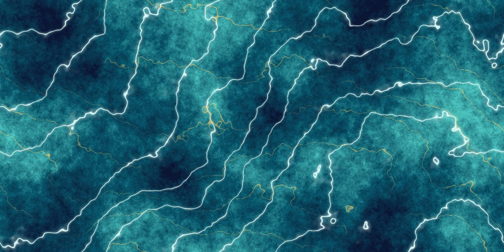

Die Szene
Kamera: ← → oder A D kreisen, ↑ ↓ oder W S höher/tiefer, N Abstand, R zurück. Textur: 1 2 3 oder M, Abwicklung: F.
Textur
- Ansicht
- –
- Form
- –
- Bilddatei
- wird geladen …
Kamera
- Kamera
- –
Einzeltasten W, A, S, D, N, R, M, F und 1 bis 3. Abschalten, wenn sie mit Hilfsmitteln kollidieren.
WebGL wird gestartet …
Bedienung
| Taste | Wirkung | Auch per |
|---|---|---|
| ← → oder A D | Kamera um den Torus kreisen (5° je Druck). Die Pfeiltasten wirken, solange der Fokus in der Szene liegt. | Links/Rechts, waagerecht ziehen |
| ↑ ↓ oder W S | Kamera höher/tiefer – auch unter den Torus | Höher/Tiefer, senkrecht ziehen |
| N / Umschalt+N | Kamera weiter weg/näher | Weiter weg/Näher, Mausrad |
| R | Kamera zurücksetzen | Zurücksetzen |
| 1 2 3 | Bildtextur, prozedurale Textur, UV-Kontrollansicht – jederzeit zurückschaltbar | Große Schalter über dem Bild |
| M | Zur nächsten Textur wechseln | – |
| F | Torus aufgeschnitten als Ebene zeigen und zurück | Abwicklung als Ebene |
| – | Wiederholungen der Bildtextur bzw. Kachelanzahl der prozeduralen Textur | Schieberegler (erscheinen passend zur Textur) |
Texturkoordinaten für den Torus
Der Torus wird als Gitter aus (nu + 1) × (nv + 1) Ecken erzeugt (hier 121 × 49 = – Ecken, – Dreiecke). Zu Position und Normale kommt pro Ecke ein drittes Attribut aUV mit zwei Werten hinzu:
u läuft also einmal um die Mittelachse, v einmal um die Röhre. Die erste und die letzte Spalte liegen an derselben Stelle im Raum, tragen aber u = 0 bzw. u = 1, deshalb gibt es die Ecken dort doppelt. Würde man sie zusammenlegen, liefe die Textur in der letzten Dreiecksreihe einmal rückwärts von 1 nach 0 durch. Der Vertex-Shader reicht (u, v) als varying weiter, die Rasterung interpoliert sie für jedes Fragment, und der Fragment-Shader liest damit die Farbe: texture2D(uTex, vUV * uRepeat).
Die Kontrollansicht 3 zeigt u als Rot- und v als Grünanteil mit Gitterlinien in Achtelschritten. Mit F wird der Torus „aufgeschnitten“ und als Rechteck mit derselben Textur gezeigt – so sieht man, wie das Bild um den Körper gewickelt wird: Außen wird es gestreckt, im Loch gestaucht.
Grundaufgabe: Bildtextur „Marmor“

Selbst erstellt: Das Bild ist nicht aus dem Internet und nicht von einem KI-Bildgenerator, sondern mit einem eigenen Python-Programm berechnet (textures/marmor.py, mit NumPy und Pillow). Vorgehen:
- Periodisches Rauschen: Zufällige Phasen werden im Frequenzraum mit einem 1/f-Spektrum gewichtet und per inverser FFT zurückgerechnet. Weil die FFT von periodischen Signalen ausgeht, passt das Bild an allen vier Rändern lückenlos aneinander. Auf dem Torus ist keine Naht zu sehen.
- Grundfarbe: Weiches Rauschen steuert einen Verlauf von Dunkelblau über Petrol zu Türkis; feine Körnung macht die Fläche steinig.
- Adern: |sin(2π(3x + 2y) + Rauschen)| ergibt verwirbelte Linien. Eine klassische Marmorformel nach Perlin. Die ganzzahligen Faktoren halten auch die Adern kachelbar. Weiße Adern bekommen einen schmalen Kern und einen weichen Schimmer, eine zweite, gekreuzte Schar wird zu dünnen Goldadern.
- Format: 1024 × 512 ist eine Zweierpotenz. Nur dann erlaubt WebGL 1 die Wiederholung (
REPEAT) und Mipmaps (LINEAR_MIPMAP_LINEAR), die das Flimmern bei schrägem Blick verhindern.
Das Seitenverhältnis 2 : 1 passt grob zum Torus: Der Weg rundherum (2πR ≈ 6,3) ist etwa 2,4-mal so lang wie der Weg um die Röhre (2πr ≈ 2,6). Mit dem Regler lässt sich das Bild rundherum bis zu viermal wiederholen.
Erweiterung: Prozedurale Textur „Azulejo“
Die zweite Textur kommt ohne Bilddatei aus: Der Fragment-Shader berechnet für jedes Fragment aus (u, v), welche Farbe es hat. Das Motiv sind portugiesische Wandfliesen (Azulejos) (weiß glasiert mit kobaltblauen Ornamenten).
- Kacheln:
g = uv * uTileszerlegt die Fläche in 36 × 12 Kacheln.floor(g)nummeriert die Kachel,fract(g)liefert die Lage darin, umgerechnet auf [−1, 1]. Weil die Kachelanzahl ganzzahlig ist (auch im Regler), schließt das Muster bei u = 1 nahtlos an u = 0 an. - Blüte: In Polarkoordinaten (ρ, φ) beschreibt ρ = 0,48 + 0,2 · cos 4φ eine vierblättrige Blüte; innen ockerfarben gefüllt, der Rand als blaue Linie.
- Übergreifendes Muster: Viertelkreise in den Ecken jeder Kachel setzen sich mit den drei Nachbarkacheln zu Ringen zusammen. Jede zweite Kachel wird gespiegelt, so entsteht ein größeres Muster über 2 × 2 Kacheln, wie bei echten Fliesenwänden.
- Handwerkliche Unregelmäßigkeit: Eine Hash-Funktion der Kachelnummer variiert Glasurton und Blauintensität ein wenig, die Kanten jeder Kachel werden leicht abgedunkelt (Wölbung der Glasur).
- Fugen: Ein schmaler grauer Rand zwischen den Kacheln. Glasur glänzt, die Fugen nicht. Der Glanzanteil des Lichts wird dort abgeschaltet.
vec2 g = uv * uTiles; vec2 cell = mod(floor(g), uTiles); vec2 p = fract(g) * 2.0 - 1.0;
float petal = length(p) - (0.48 + 0.2 * cos(4.0 * atan(p.y, p.x))); // Blüte
if (petal < 0.0) col = mix(col, ochre, 0.85);
col = mix(col, cobalt, line(petal, 0.07)); // Kontur
col = mix(col, cobalt, line(length(abs(p) - 1.0) - 0.55, 0.08)); // Ring über die EckenVorteile gegenüber der Bildtextur: beliebig scharf auch aus der Nähe, keine Datei, und Parameter wie die Kachelanzahl lassen sich live ändern.
Barrierefreiheit
- Umschalter
- Die Texturwahl ist eine große, gut sichtbare Auswahl über dem Bild (Mindesthöhe 56 px) und jederzeit zurückschaltbar; die Abwicklung ist ein Ein-/Aus-Schalter (2.5.8, 4.1.2).
- Tastatur
- Jede Funktion gibt es als Taste und als Schaltfläche; die Einzeltasten lassen sich abschalten (2.1.1, 2.1.4).
- Textalternativen
- Das Canvas beschreibt die aktuelle Ansicht, das Texturbild hat einen Alternativtext (1.1.1).
- Fehler
- Kann die Bilddatei nicht geladen werden, erscheint ein Hinweis mit Lösung (lokalen Webserver starten), die Szene läuft mit Ersatzfarbe weiter (3.3.1).
Test und Qualitätssicherung
Getestet in Chrome unter macOS in beiden Designs: alle drei Texturen hin und zurück, Abwicklung an und aus, alle Reglerstellungen, Kamera mit Pfeiltasten und mit W A S D, auch unter den Torus. Keine sichtbare Naht bei u = 0 und v = 0. Fehlerfall geprüft: fehlende Bilddatei führt zur Meldung statt zum Absturz. Die Seite muss über einen Webserver laufen (GitHub Pages bzw. lokal python3 -m http.server), weil Browser Bilder aus file:// nicht als WebGL-Textur zulassen (CORS). Die Konsole (Cmd+Alt+J) zeigt nur eine Info-Meldung, keine Fehler.
Quellen
- Texturen in WebGL: MDN: Using textures in WebGL (Laden, Zweierpotenzen, Mipmaps), WebGL Fundamentals: Textures, WebGL Fundamentals: Cross-Origin Images.
- Lokaler Webserver: mrcoles.com: How to start a local web server.
- Marmor und Rauschen: Ken Perlin, „An Image Synthesizer“, SIGGRAPH 1985 (Marmor über sin(x + Turbulenz)); The Book of Shaders: Noise.
- Prozedurale Muster: The Book of Shaders: Patterns (Kacheln mit fract/floor), Shapes (Polarkoordinaten-Blüte); Motiv angelehnt an Azulejos (Wikipedia).
- Bildmaterial: textures/marmor.jpg und das Azulejo-Muster sind selbst erstellt, ohne fremdes Ausgangsmaterial.
- Seite und Code: selbst erstellt, aufbauend auf den Aufgaben 4 bis 8.
- Schrift: Bricolage Grotesque, Mathieu Triay, SIL Open Font License, über Google Fonts.